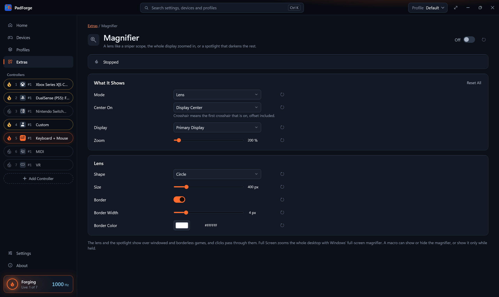

Magnifier¶
A zoom lens like a sniper scope, the whole display zoomed in, or a spotlight that darkens everything but a circle.
The magnifier zooms part of the screen for a game with no scope or iron sights, or dims the screen around the point you aim at. It uses Windows' own Magnification API, so it needs no driver and nothing hooked into the game.

The page¶
Open Extras in the sidebar and click the Magnifier tile, in the On Screen group. The page's head holds Show Magnifier, the magnifier's switch, which the tile shows too. It is off by default. The magnifier shows while the input engine runs.
Under the head, a status card reads Running or Stopped, with a flame that burns while the magnifier is up. When Windows refuses to start it, the card reads Windows did not start the magnifier. and nothing stays on the screen.
The What It Shows card holds the rows every mode shares. Its Reset All turns the magnifier off and puts every value back to its default. Every row has its own reset button.
| Row | What it does | Default |
|---|---|---|
| Mode | Lens, Full Screen or Spotlight, below | Lens |
| Center On | Display Center, Pointer or Crosshair. Crosshair is the first crosshair that is on, its offset included, or the display's center while none is on. | Display Center |
| Display | The display whose center the magnifier marks. It applies only with Display Center: following the pointer, the magnifier is on the display the pointer is on, and following a crosshair, on the crosshair's. | Primary Display |
| Zoom | 125% to 1600%, in steps of 25 on the slider. Not shown for Spotlight, which does not zoom. | 200% |
Lens¶
A lens is a window over the point it centers on that shows the area around that point magnified. A circle shows only what falls inside it. The lens stays on its display: near an edge it moves in rather than hang off it. The mouse goes through it.
The Lens card:
| Row | What it does | Default |
|---|---|---|
| Shape | Circle or Rectangle | Circle |
| Size | A circle's width, 80 to 2000 px. A round lens stays round. | 400 |
| Width and Height | A rectangle's two sides, 80 to 2000 px each, in place of Size. A rectangle turned back to a circle becomes a circle of its width. | 400 and 400 |
| Border | A border around the lens | On |
| Border Width | 1 to 20 px | 4 |
| Border Color | A swatch that opens a color picker, and the color as #RRGGBB | #FFFFFF, white |
The lens leaves the crosshairs and its own border out of what it magnifies, and the crosshairs stay above it, so a crosshair marks the lens's center at its own size.
Full Screen¶
Full Screen zooms the whole display with Windows' full-screen magnifier. The point it centers on moves to the display's center, except near an edge, where the view stops at the display's edge and shows nothing of the next display. It has no card of its own. When the magnifier hides, the zoom goes back to 100%. It goes back too if PadForge is closed or killed, since Windows ends a program's zoom when the program exits.
Spotlight¶
Spotlight dims the display except for a circle around the point it centers on. It does not zoom.
| Row | What it does | Default |
|---|---|---|
| Circle Size | The circle's width, 40 to 2000 px | 400 |
| Darkness | How dark the display goes outside the circle, 10% to 95%. At 60% the rest of the display keeps 40% of its brightness. | 60% |
The circle's edge is smoothed. The mouse goes through the shade.
Limits¶
- A game in exclusive full screen hides the lens and the spotlight. Run it windowed or borderless.
- In Full Screen, Windows zooms the crosshairs with everything else, since its full-screen magnifier has no way to leave a window out. The Lens leaves them out.
- Windows' full-screen zoom serves one program at a time. While another program holds it, Full Screen does not start, and the status card says Windows did not start the magnifier.
- Once a second, the lens and the spotlight go back above a game that put its own window on top after they came up, and follow a display whose resolution or place changed.
Macros¶
Two actions under Layers & Overlays in a macro's action list reach the magnifier from any slot:
| Action | What it does |
|---|---|
| Toggle Magnifier | Turns Show Magnifier on or off, as the switch on the page does. |
| Magnifier (While Held) | Shows the magnifier while the macro is held, for aiming down sights, and hides it a moment after release. It leaves the page's switch alone: with the switch on, the magnifier stays up. |
Both use the page's mode and settings. See Macros.
Profiles¶
Each profile keeps the magnifier's switch and every value on the page. A profile saved before PadForge 6.0.0 has the magnifier off at its defaults.
See the technical page, Crosshair and Magnifier Internals.
Last updated for PadForge 6.0.0.